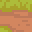
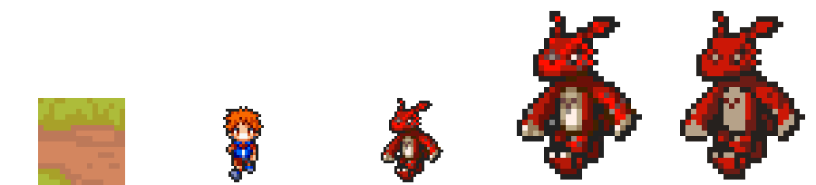
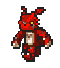
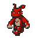
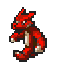
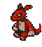
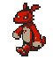

Tile de mapa
32×32px
32×32px
Revisão do coordenador (game-studio) sobre o piloto ce83237: na prancha de proporção, o Guilmon 60×68 do v1 saiu com manchas/preto salpicado, sem clusters de cor limpos — rosto e barriga perdiam leitura. Causa confirmada nesta prova: a referência enviada ao create_character(v3) era um nearest-upscale ×2 do frame nativo de 30×34px do rip — e esse frame nativo já carregava dither/ruído de 1-2px por pixel (comum em sprites DS pequenos), invisível em 30px mas amplificado em blocos 2×2 visíveis em 60×68. O v3 mantém a direção south quase pixel-a-pixel igual à referência (confirmado: só 1 pixel de diferença entre a referência e o south do v1) — então o ruído da referência passa direto para o personagem, e contamina o "estilo" que o v3 usa para pintar as outras direções/animações.
Base alinhada (pés no mesmo nível), pixelart_workbench scale --by 3 + join --as sheet, mesmo multiplicador em toda a prancha.




GIFs nativos, fator ×4 (CSS image-rendering: pixelated, sem reamostragem).







create_character(v3) em si. Corrigir só a referência (sem trocar de ferramenta) resolveu o problema inteiro.Consulta gratuita a get_pro_flash_capabilities(operation="character", width=64, height=64, n_directions=8): piso de 6 gerações (5 pela imagem + 1 pelas rotações) só para o personagem, qualquer que seja o resultado — e o mesmo piso de 5 gerações vale para uma única imagem estática via create_image_pro_flash. Com o teto total de 8 gerações desta prova e a animação completa do vencedor custando 4 (S+SW × idle+walk), rodar M1 por completo (ou mesmo uma amostra estática) deixaria orçamento negativo ou cortaria a animação do método vencedor. Como o M2 já confirmou a hipótese e resolveu o problema a um custo quase nulo (~1,2 geração para personagem + limpeza, ante o piso de 5–6 do M1), priorizei entregar o M2 completo e documentar esta decisão em vez de gastar o teto em dois testes pela metade. Ver README.md §6 para os números exatos e a recomendação de um teste M1 dedicado (~6 gerações) numa sessão futura, se o fundador quiser a comparação completa.